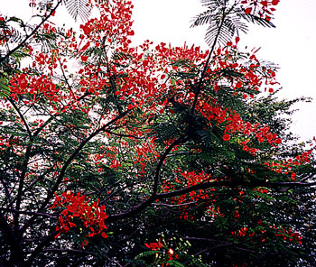
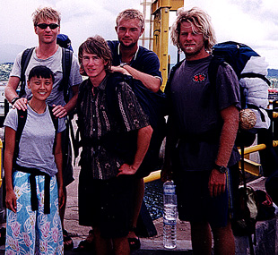
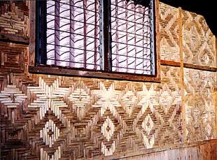

Sent: 12 Jan 2000 11:50 GMT
web version,
|
 |
| Prior Trav-E-Log: Boating | Sumbawa is ... angst and rocks and ... |
(Note:) This is the 19th in a series of Trav-E-Logs sent while traveling in S.E.Asia between Oct 16, 1999 and Jan 22, 2000.Hi folks,
Sent three updates yesterday, and here is the second of three today. All six should be read in the proper order if you want to really understand the situation. The order for those today are, "boating", followed by this one, "Sumbawa", and finally "Lombok".
=====================
As we hop onto the dock in Sape, several hawkers meet us and tell us (with curse words,) that we have to buy bus tickets from then, that our agent "bull shit you", and that no bus will take us to Bima for free. An hour later, as promised by our agent, a bus driver shows up just before the ferry, and tells us he is our paid-up transfer to Bima. But he also scolded us for buying the ticket in Flores. (A friend tells me Sumbawa has little to offer tourists, and for survival, needs the little revenue created by those passing through.) The hawkers are visibly upset, and continue the abusive language. I'm a little uncomfortable with my introduction to Sumbawa.
The transfer bus pulls into Bima a little after 5 PM, where we catch a brand-new, immaculate, Executive-klas bus to our destinations in Lombok, Bali, or Jawa. The Dumai Mas bus won't leave until 7 PM, so we mill around the terminal, eat a fried rice dinner, and buy more cookies, wafers, and sweets, contemplating the long bus ride. Can't find any open fruit stands, but remember this is a holiday comparable to Christmas Day in the West. I decide to remove a pair of long pants from my pack before placing it in the storage locker under the bus, assuming the A/C will be working overtime. Other backpackers are boarding a companion bus with the same destinations as ours.
It's getting dark as the bus leaves the terminal, so not much can be seen out the windows in the rural stretches. As we pass through several villages, the festive atmosphere ending Ramadan is obvious everywhere. Some streets are so plugged with partygoers, it takes the bus quite a while to maneuver through the villages. Chris is my seatmate, and for once he can enjoy a window seat with legroom, for his 6'+ frame. Soon, each passenger is given a big box containing a little piece of cake and a cup of water. The DC/AC converter does not work, so we will not be subjected to overpowered speakers blaring karaoke, TV, and cheap videos on this trip. Wonderful. No one smokes while in the bus, and no durian is permitted on the bus, so I'm looking forward to a wonderful trip to Mataram, Lombok. Then someone uses the toilet on board the bus, situated immediately behind my chair, and the smell is overpowering. Occasionally, a very young crew member will swash the toilet with pine oil, but other passengers take this as the "clean" signal, use the toilet, and flush the pine oil out onto the highway. Later, the crew locks the toilet for several hours, and it makes for a more pleasant smelling journey. I close my eyes, only to be awaken by a crowd beating on the bus. The few passengers still awake get up and look outside, but I assume it's more of the partying. Later, I'm told that a villager was upset someone had stolen his buffalo, and that the crowd was helping him search for the thief by blocking the highway and stopping all vehicles. Someone tells me the crowd broke a mirror, but the driver tells me later that it was a reflector. I could find no damage to the bus when examining it the next morning. The incident took place near Dompu, Sumbawa, and it reminds me of the reports of foreigners being robbed and hijacked in Kuta, Lombok. Altogether, the bus stops four or five times after midnight, searching for an open restaurant to serve the included meal, but every place is now closed. At 4 AM, the bus pulls into the ferry port at Poto Tano. No ferry is in sight. The book says ferries leave every 45 minutes to one hour, 24 hours a day, but the first ferry won't arrive until 10:30 AM. We are served a paltry meal of rice with a tiny piece of chicken, with a few vegetables. There is not much being sold at the port, but some of us figure spending our own money for food is a viable alternative to going hungry. More than an hour after we arrived, the companion bus arrives, with one of the BIG side windows smashed out, many fresh scratches and dents on the sides, and obvious damage where someone had tried to pry open a luggage compartment. Two men wielding knives had blocked the highway with tree limbs, and when the bus stopped, many jumped out from hiding places. As the bus pulled away, one of the men tossed a rock through the window, injuring one passenger. I decide not to stay in Lombok if the bus will let me stay on board to Bali.
Bill